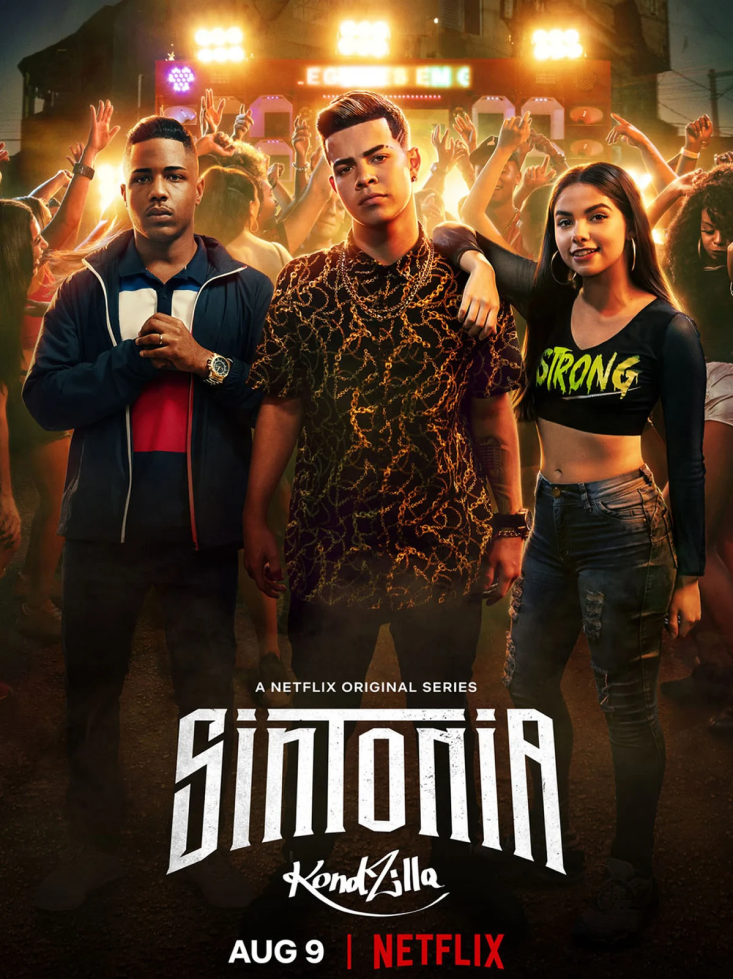
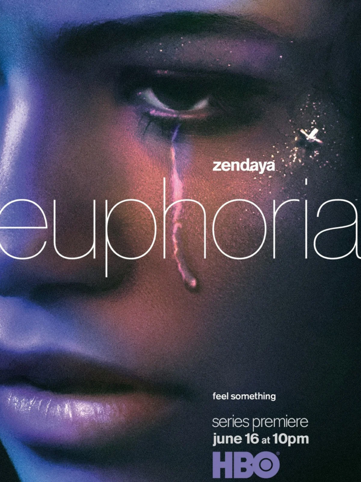

Sinopse & Info
O jovem Scott McCall (Tyler Posey) é estudante
do ensino médio no colégio fictício de Beacon Hills
e vive como um garoto comum,passando por problemas
naturais da juventude.Ao ir caminhar na em busca
de um suposto corpo morto, o menino é mordido por um lobisomem.

Três adolescentes da mesma favela de
São Paulo correm atrás de seus sonhos e tentam manter
sua amizade em um mundo pautado por música, drogas e religião.
A série americana conta a história de um grupo de
jovens que estudam no mesmo colégio, tendo como protagonista Rue
(Zendaya), uma adolescente viciada em drogas desde a morte do pai.
A trama foca nos conflitos e traumas desse grupo de estudantes e
mostra como cada um deles lida com seus problemas.


A StarGeek é um serviço de streaming que oferece uma ampla variedade
de séries, filmes e documentários premiados em milhares de aparelhos
conectados à internet. Você pode assistir a quantos filmes e séries
quiser, quando e onde quiser – tudo por um preço mensal acessível.
Aqui você sempre encontra novidades. A cada semana, adicionamos novas
séries e filmes.